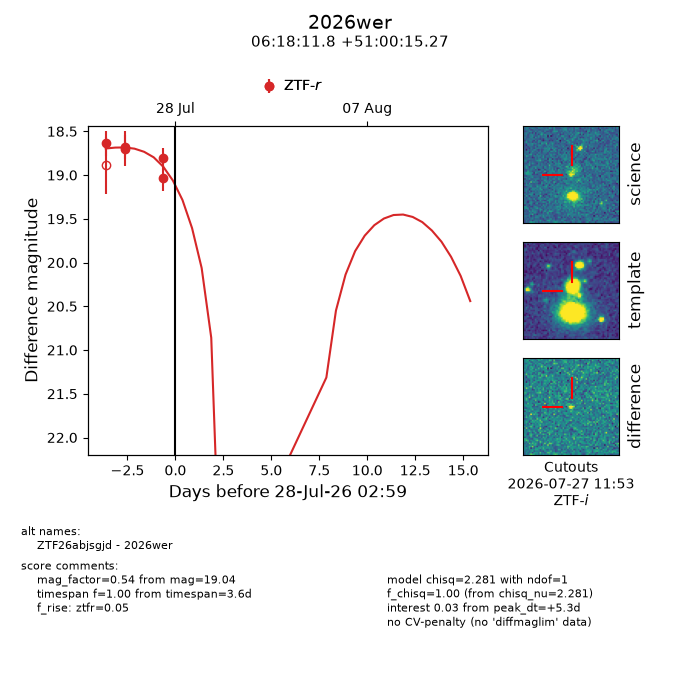
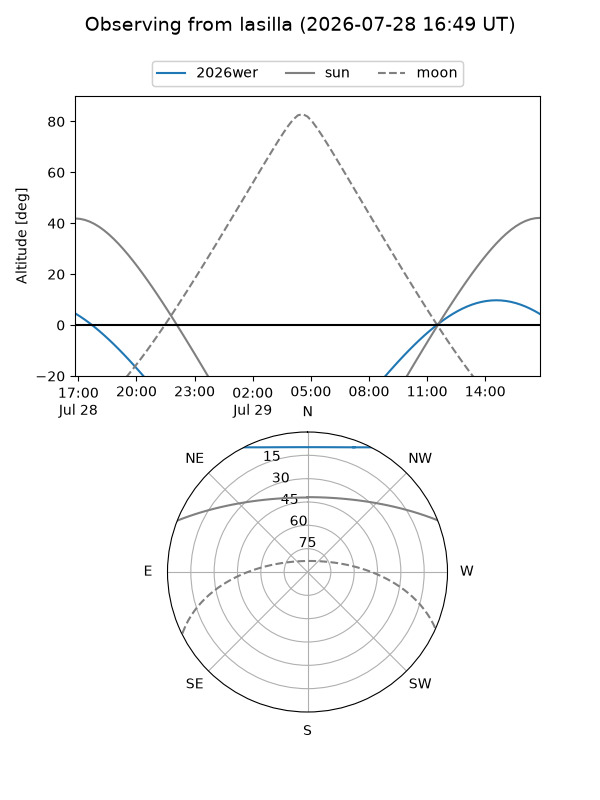
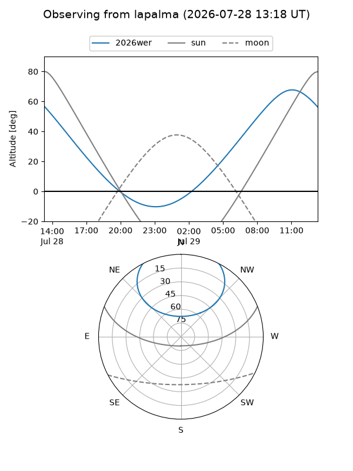
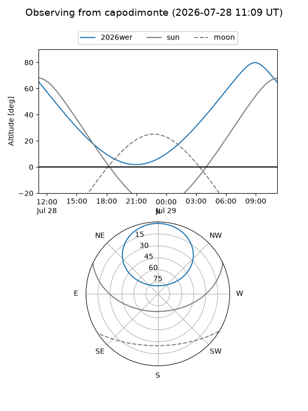
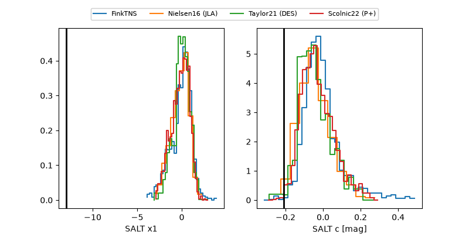

2026wer
Target 2026wer at 2026-07-28 15:01
Aliases and brokers:
FINK-ZTF: ztf.fink-portal.org/ZTF26abjsgjd
Lasair-ZTF: lasair-ztf.lsst.ac.uk/objects/ZTF26abjsgjd
ALeRCE-ZTF: alerce.online/object/ZTF26abjsgjd
YSE-PZ: ziggy.ucolick.org/yse/transient_detail/2026wer
TNS name: wis-tns.org/object/2026wer
Direct TNS query: direct search
alt names
ZTF26abjsgjd (ztf,fink_ztf)
2026wer (tns,yse)
Coordinates:
equatorial (ra, dec) = 94.5490,+51.00424
equatorial (HMS+DMS) = 06:18:11.76,+51:00:15.27
galactic (l, b) = (163.2722,+15.86913)
Flags:
TNS type: nan
peak dt: +5.8
Photometry:
last ztfr=19.04
5 ztfr detections
Lightcurve

Visibility



Additional plots
